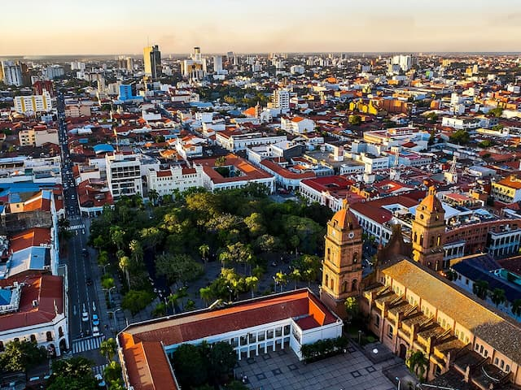

Santa Cruz de la Sierra, located in eastern Bolivia, is the country’s largest and most economically vibrant city, home to over two million people. Known as Bolivia’s economic capital, it thrives on agriculture, commerce, construction, and the petrochemical industry. The city enjoys a tropical savanna climate with warm temperatures year-round and occasional cool “surazo” winds.
Santa Cruz is famous for its friendly and welcoming people, lively nightlife, and delicious regional dishes such as Majau, Locro, and Sonso. Visitors can explore the historic Plaza 24 de Septiembre, the Catedral Metropolitana,or relax at the Biocentro Güembé and nearby Amboró National Park. Blending tradition and modernity, Santa Cruz de la Sierra stands out as Bolivia’s most dynamic and fast-growing urban center.
